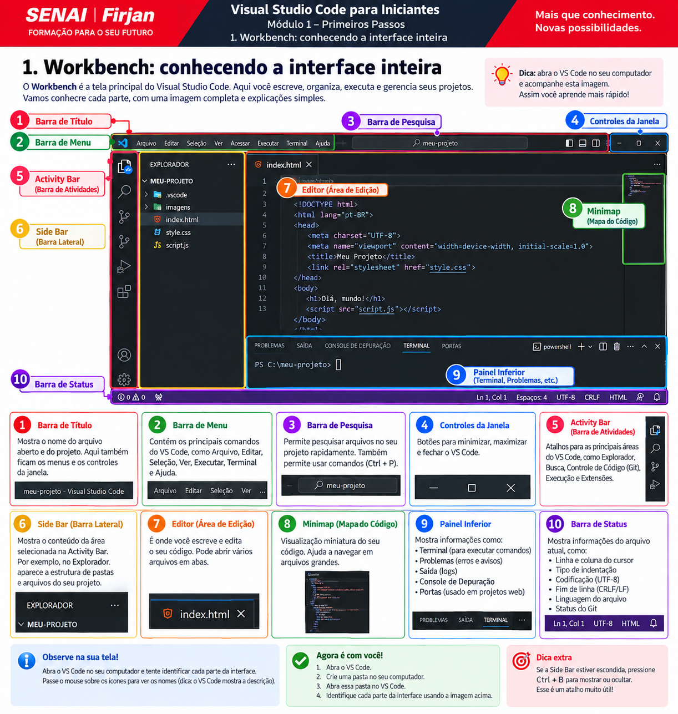

VS Code do zero, explicado com profundidade.
Esta trilha foi feita para quem está começando e precisa entender o que cada parte do VS Code faz, por que ela existe e como ela se relaciona com o sistema operacional, linguagens, terminal, Git e extensões. A proposta não é decorar botões: é construir um mapa mental sólido.
0. Antes de tudo: o que o VS Code é — e o que ele não é
O VS Code é um editor de código extensível. Ele organiza arquivos, entende linguagens, integra terminal, depuração, controle de versão e extensões. Mas ele não substitui o sistema operacional, a linguagem, o compilador ou o navegador.
Uma confusão clássica: “meu projeto está dentro do VS Code”. Na prática, não. O projeto está em uma pasta real do disco. O VS Code apenas mostra e trabalha com essa pasta. Se você fechar o editor, os arquivos continuam lá.
Outra confusão: “VS Code roda JavaScript”. Quem executa JavaScript pode ser o navegador ou o Node.js. O VS Code oferece o ambiente para escrever e acionar essas ferramentas.
1. Workbench: conhecendo a interface inteira
A janela principal do VS Code é chamada de Workbench. Ela é formada por regiões que têm responsabilidades diferentes.
Mapa visual da interface do VS Code
Veja antes de decorarAntes de estudar cada item separadamente, observe a imagem abaixo. Ela funciona como um mapa da tela: cada número mostra onde fica uma parte importante do VS Code.

Activity Bar
Barra de ícones. Troca a visão exibida na lateral: Explorer, Search, Source Control, Run and Debug, Extensions e outras.
Side Bar
A área que recebe o conteúdo da visão escolhida. Explorer é uma visão dentro da Side Bar.
Editor
Área central onde arquivos são abertos. Pode ser dividida em grupos lado a lado.
Panel
Geralmente inferior. Pode conter Terminal, Problems, Output e Debug Console.
Status Bar
Barra inferior com linguagem, encoding, fim de linha, branch Git, posição do cursor e outros estados.
Command Center
Área superior usada para navegação e descoberta de comandos, dependendo da versão e configuração.
Se alguma parte “sumir”, não pense primeiro em erro. Ela pode ter sido ocultada ou movida. Abra a Command Palette e procure por comandos iniciados em View:.
2. Explorer: arquivos, pastas e a raiz do projeto
O Explorer é seu mapa de arquivos. Para iniciantes, entender “raiz”, caminhos e pasta aberta evita muitos problemas.
meu-projeto/
├── index.html
├── css/
│ └── style.css
├── js/
│ └── app.js
└── imagens/
└── logo.png
A pasta meu-projeto é a raiz. Um caminho como js/app.js é relativo a essa raiz.
Ao criar, mover ou renomear arquivos pelo Explorer, você está alterando arquivos reais no sistema. Não é uma “cópia virtual”.
3. O que realmente é um Workspace
Workspace é o contexto de trabalho. Muitas vezes ele corresponde a uma pasta, mas também pode representar múltiplas pastas e configurações específicas.
Arquivo isolado: útil para uma edição rápida. Pasta/workspace: ideal para um projeto real.
Configurações de workspace podem ser guardadas na pasta .vscode, dependendo do recurso. Isso permite que um projeto tenha comportamento específico sem mudar seus outros projetos.
.vscode sem entender. Ela pode conter configurações, tasks ou launch configurations úteis ao projeto.4. Editor: edição, IntelliSense e recursos essenciais
O editor não é apenas um bloco de notas. Ele entende linguagens e pode fornecer sugestões, navegação, formatação e refatoração.
| Recurso | O que faz | Quando ajuda |
|---|---|---|
| Syntax Highlighting | Colore elementos do código. | Leitura e reconhecimento visual. |
| IntelliSense | Sugestões, completions e informações contextuais. | Escrever código com menos digitação e mais contexto. |
| Hover | Mostra informações ao passar o mouse. | Entender variável, função ou tipo. |
| Go to Definition | Vai para a definição de um símbolo. | Explorar projetos maiores. |
| Peek Definition | Mostra definição sem sair totalmente do contexto. | Consulta rápida. |
| Format Document | Solicita formatação ao formatador disponível. | Indentação e padronização. |
Uma linha sublinhada em vermelho ou amarelo não significa sempre “o VS Code está errado”. Pode ser uma análise da linguagem, linter ou extensão.
5. Edição eficiente: recursos que economizam horas
Editar código não é apenas digitar. Um bom editor permite selecionar, mover, repetir, transformar e navegar pelo texto com muito menos esforço. Nesta aula, o objetivo é entender o que o VS Code faz no documento, e não apenas decorar atalhos.
5.1 Cursor, seleção, linha e coluna
FundamentoO cursor indica onde o próximo caractere será inserido. Uma seleção é um trecho marcado para receber uma ação. Uma linha é delimitada por uma quebra de linha. A coluna indica a posição horizontal do cursor.
<h1>Olá, mundo!</h1>
↑ cursor
A Status Bar mostra algo como Ln 15, Col 8: linha 15, coluna 8. Esse detalhe é muito útil quando uma mensagem de erro aponta uma posição específica.
5.2 Mover linhas
Alt + ↑ / ↓No Windows/Linux, Alt + ↑ ou Alt + ↓ move a linha atual. É mais seguro e rápido que selecionar, recortar, procurar o destino e colar.
<h1>Título</h1> <p>Primeiro</p> <p>Segundo</p>
Segundo para cima e depois devolva ao lugar.5.3 Duplicar linha ou seleção
Repetição controladaQuando duas estruturas serão parecidas, duplicar evita redigitar tudo. Procure Copy Line Down na Command Palette e observe o atalho configurado no seu sistema.
<button>Salvar</button> <button>Cancelar</button>
5.4 Múltiplos cursores
Editar vários pontosO VS Code permite manter várias posições de edição no mesmo documento. No Windows/Linux, uma forma comum é segurar Alt e clicar em diferentes posições.
<li>Produto</li> <li>Produto</li> <li>Produto</li>
Com três cursores antes de Produto, digitar Novo altera as três linhas simultaneamente.
5.5 Selecionar próxima ocorrência
Ctrl + DSelecione uma palavra e use Ctrl + D. O VS Code adiciona a próxima ocorrência igual à seleção. É ótimo quando você quer alterar algumas ocorrências, não todas.
5.6 Find, Replace e Replace All
Ctrl + F / Ctrl + HFind procura texto. Replace procura e substitui. Opções como Match Case diferenciam maiúsculas/minúsculas; Whole Word exige palavra inteira; e Regex usa padrões especiais.
5.7 Rename Symbol não é Replace
F2 quando suportadoReplace trabalha com texto. Rename Symbol pode trabalhar com o significado do código quando o suporte da linguagem entende aquele símbolo.
const nome = "Magno"; console.log(nome);
Uma variável, função, classe ou método pode ser um símbolo. Renomeá-lo com uma ferramenta de linguagem é uma forma simples de refatoração: reorganizar o código preservando sua intenção/comportamento.
5.8 Indentação: Spaces, Tabs e caracteres invisíveis
Estrutura visualif (usuarioLogado) {
console.log("Bem-vindo");
}
A Status Bar pode mostrar Spaces: 4. Pressionar a tecla Tab não significa obrigatoriamente salvar um caractere TAB: o editor pode inserir espaços conforme a configuração.
Render Whitespace para visualizá-los.5.9 Word Wrap
Alt + ZWord Wrap faz uma linha longa continuar visualmente embaixo quando falta espaço horizontal.
5.10 Comentários
Ctrl + /Comentários são trechos que a linguagem normalmente ignora durante a execução e podem documentar decisões ou auxiliar testes temporários.
// comentário JavaScript /* comentário em bloco */
Toggle Line Comment usa a sintaxe adequada ao modo de linguagem atual.
5.11 Format Document e Format On Save
Formatação ≠ correção lógicaFormatar reorganiza aspectos como indentação, espaços e quebras conforme regras de um formatador. Isso não significa corrigir a lógica do programa.
Se houver mais de um formatador, pode ser necessário definir um Default Formatter. Format On Save solicita formatação quando o arquivo é salvo.
5.12 Undo, Redo e Git são coisas diferentes
Histórico de ediçãoCtrl+Z desfaz operações recentes. Redo reaplica uma operação desfeita.
5.13 Preview Tab: por que uma aba parece desaparecer
Comportamento do editorUm único clique em um arquivo pode abri-lo em modo Preview. Ao clicar em outro arquivo, a aba de preview pode ser reutilizada.
O arquivo não foi apagado. É apenas uma estratégia do VS Code para não criar dezenas de abas durante a navegação. Esse comportamento é relacionado a configurações como workbench.editor.enablePreview.
5.14 Fechamento automático de pares
() [] {} ""Ao digitar (, [, { ou aspas, o editor pode inserir automaticamente o fechamento. Ele também pode envolver uma seleção com determinados pares.
5.15 Snippets e Emmet
Automação conscienteSnippet é um modelo de código expansível. Emmet permite abreviações muito úteis em HTML/CSS.
ul>li*3
Em HTML, essa abreviação pode gerar uma lista com três itens quando o Emmet está disponível.
5.16 Exercício integrado
10–15 minutos- Crie um arquivo
treino.htmle três elementos semelhantes. - Duplique uma linha.
- Mova uma linha para cima e para baixo.
- Use múltiplos cursores para editar três textos.
- Use Ctrl+D.
- Faça uma busca e substituição.
- Ative/desative Word Wrap.
- Comente e descomente uma linha.
- Use Format Document.
- Desfaça e refaça uma alteração.
6. Status Bar: aprenda a ler a barra inferior
A Status Bar responde várias perguntas sem abrir menus.
| Exemplo | Significado |
|---|---|
Ln 20, Col 5 | Cursor na linha 20, coluna 5. |
Spaces: 4 | Indentação interpretada com largura 4. |
UTF-8 | Encoding atual. |
CRLF / LF | Convenção de fim de linha. |
HTML, JavaScript, etc. | Modo de linguagem. |
| Nome de branch | Branch Git atual. |
Plain Text.7. Command Palette: o comando mais importante para aprender
A Command Palette permite procurar ações pelo nome, mesmo quando você não sabe em qual menu elas estão.
No Windows/Linux, use Ctrl+Shift+P. Tente buscar:
Format Document Open Settings Change Language Mode Toggle Terminal Reload Window
8. Atalhos essenciais sem exagero
| Ação | Windows/Linux |
|---|---|
| Command Palette | Ctrl+Shift+P |
| Quick Open | Ctrl+P |
| Settings | Ctrl+, |
| Terminal | Ctrl+` |
| Buscar no arquivo | Ctrl+F |
| Buscar no projeto | Ctrl+Shift+F |
| Salvar | Ctrl+S |
| Fechar editor | Ctrl+W |
Atalho é ferramenta de velocidade, não requisito para entender programação. Use aos poucos.
9. Terminal integrado — do zero e sem mistério
O terminal é uma das partes que mais assustam iniciantes porque mistura VS Code, sistema operacional e ferramentas externas.
Terminal
A interface onde você digita e vê saída.
Shell
O programa que interpreta os comandos: PowerShell, Bash, Zsh, entre outros.
Comando
A instrução enviada ao shell: cd, git, node, etc.
Abra em View → Terminal ou com Ctrl+`.
Diretório atual
PS C:\Users\Aluno\projetos\lista-tarefas>
Esse texto indica que o terminal está dentro da pasta lista-tarefas. Muitos erros de “arquivo não encontrado” acontecem porque o terminal está em outra pasta.
| Comando | Ideia |
|---|---|
pwd | Mostra o diretório atual em shells compatíveis. |
ls | Lista itens. |
cd pasta | Entra em uma pasta. |
cd .. | Volta um nível. |
10. PATH: por que “git/node/code não é reconhecido”
Quando você digita o nome de um programa no terminal, o sistema precisa encontrá-lo.
PATH é, de forma simplificada, uma lista de diretórios onde o sistema procura executáveis.
Se você instalou Node.js agora e um terminal antigo não reconhece node, fechar e reabrir o terminal — e às vezes o VS Code — pode fazer o novo ambiente ser carregado.
11. Problems, Output, Terminal e Debug Console
Essas áreas são confundidas o tempo todo.
| Área | Principal função |
|---|---|
| Problems | Erros e avisos identificados por ferramentas de análise. |
| Output | Logs do VS Code e de extensões. |
| Terminal | Executar comandos no shell. |
| Debug Console | Saída e avaliação durante uma sessão de depuração. |
12. Settings: User × Workspace
Quase todo comportamento do VS Code pode ser configurado. O ponto difícil é entender o escopo.
User Settings
Suas preferências gerais, aplicadas a vários projetos.
Workspace Settings
Preferências específicas do projeto atual e que podem sobrescrever as de usuário.
Language-specific
Algumas configurações podem valer apenas para uma linguagem.
Abra com Ctrl+,. A interface gráfica altera as mesmas configurações que também podem aparecer em settings.json.
{
"editor.fontSize": 16,
"editor.wordWrap": "on",
"files.autoSave": "afterDelay",
"editor.formatOnSave": true
}
@modified, útil para ver o que você mudou em relação ao padrão.13. Auto Save, arquivos “sujos” e salvamento real
Modificar o conteúdo no editor e gravar no disco não são necessariamente a mesma coisa.
Quando um arquivo tem alterações ainda não salvas, o VS Code apresenta um indicador na aba. Com Auto Save desativado, Ctrl+S grava manualmente.
Auto Save pode ser configurado para diferentes comportamentos. Para estudar, salvar manualmente também tem valor porque ajuda a perceber quando o arquivo realmente foi gravado.
14. UTF-8, CRLF/LF e Language Mode
Três pequenos indicadores que podem causar problemas grandes.
Encoding
Encoding define como caracteres são representados em bytes. UTF-8 é extremamente comum em desenvolvimento web. Caracteres estranhos como acentos quebrados podem envolver codificação.
Fim de linha
CRLF e LF são convenções de quebra de linha. Mudanças de uma convenção para outra podem fazer Git enxergar muitas linhas como alteradas.
Language Mode
Controla como o editor interpreta o arquivo. Se um arquivo .js estiver como Plain Text, você pode perder destaque e recursos inteligentes.
15. Extensões: como instalar sem bagunçar seu ambiente
Extensões adicionam linguagens, formatadores, debuggers, temas e integrações.
Antes de instalar, pergunte:
- Qual problema ela resolve?
- O VS Code já faz isso?
- Quem publicou?
- Ela parece confiável e mantida?
- É necessária para este curso/projeto?
16. Workspace Trust e Restricted Mode
Esse aviso não existe para incomodar. Ele existe porque projetos podem conter coisas executáveis.
Um workspace pode incluir tasks, configurações, scripts e integrações capazes de executar ações. Em Restricted Mode, vários recursos ficam limitados até que você confie na origem.
Workspace Trust não torna uma extensão desconhecida automaticamente segura. Extensões também executam código e devem vir de fontes confiáveis.
17. Busca e navegação em projetos
Em projetos maiores, procurar arquivo por arquivo deixa de funcionar.
- Ctrl+P: abre arquivo pelo nome.
- Ctrl+F: busca no arquivo atual.
- Ctrl+Shift+F: busca em todo o workspace.
- Go to Definition: navega para definição.
- References: mostra onde um símbolo é usado, quando suportado.
- Breadcrumbs: ajuda a entender a posição no arquivo/projeto.
18. Grupos de editor, split e organização da tela
Você pode abrir arquivos lado a lado.
Um caso simples: HTML à esquerda e CSS à direita. Outro: código de um lado e teste do outro. Use split para reduzir troca de contexto.
O terminal também pode ser movido e dividido. Aprender a reorganizar a tela ajuda muito em notebooks e monitores pequenos.
19. Source Control: o Git visto pelo VS Code
O VS Code possui interface integrada de controle de versão, mas usa a instalação de Git do computador.
Git ≠ GitHub. Git registra versões. GitHub é uma plataforma de hospedagem e colaboração.
- Changes: arquivos alterados.
- Staged Changes: mudanças selecionadas para o próximo commit.
- Commit: registro de um conjunto de mudanças.
- Branch: linha de trabalho atual.
20. Run and Debug: observar o programa por dentro
Executar é obter resultado. Depurar é investigar a execução.
- Breakpoint: ponto onde a execução pausa.
- Variables: valores disponíveis naquele momento.
- Call Stack: cadeia de chamadas que levou até ali.
- Step Over: avança uma etapa sem entrar em determinada chamada.
- Step Into: entra na chamada quando possível.
console.log é útil, mas breakpoint permite congelar o estado e investigar variáveis no momento exato.21. Tasks: automatizando comandos repetitivos
Tasks permitem ensinar ao VS Code como executar rotinas frequentes do projeto.
Podem representar build, testes, geração de arquivos ou outros comandos. Em projetos reais, isso reduz trabalho repetitivo.
22. Profiles e Settings Sync
Profiles ajudam a separar ambientes diferentes dentro do VS Code.
Você pode ter um perfil “Curso Básico” com poucas extensões, outro para JavaScript/React e outro para Python.
Settings Sync pode sincronizar preferências entre dispositivos quando configurado.
23. “Perdi meu código”: investigação antes do pânico
Muitas vezes o código não foi perdido; o contexto mudou.
- Você fechou o arquivo ou apagou?
- Abriu outra pasta?
- A aba estava em preview?
- O Explorer está filtrando ou ocultando algo?
- Undo recupera a alteração?
- Git tem uma versão anterior?
- Timeline/histórico disponível mostra versões?
24. Método para interpretar erros no VS Code
Não tente resolver erros olhando apenas a última linha.
- Onde apareceu? Terminal, Problems, navegador, Debug Console?
- Quem gerou? JavaScript, Node, Git, extensão, sistema?
- Qual arquivo? Há caminho e número de linha?
- Qual é a primeira mensagem importante? Uma falha inicial pode gerar várias mensagens depois.
- O erro se repete em um projeto mínimo? Isolar o problema ajuda.
ReferenceError: exemplo is not defined
at app.js:15:3
Leia como: tipo do erro → mensagem → arquivo → linha/coluna. Essa disciplina é mais importante do que decorar soluções.
25. Hábitos profissionais para aprender cedo
- Abra a pasta correta do projeto.
- Confirme o diretório atual do terminal.
- Use poucas extensões e entenda cada uma.
- Leia a Status Bar.
- Use a Command Palette para descobrir recursos.
- Faça mudanças pequenas e teste.
- Leia mensagens de erro por origem, arquivo e linha.
- Não confunda VS Code com linguagem, runtime ou Git.
- Não execute comandos desconhecidos.
- Use Git cedo, mesmo em projetos pequenos.
Glossário essencial
| Termo | Significado simples |
|---|---|
| Workbench | Janela principal do VS Code. |
| Workspace | Contexto de trabalho aberto no editor. |
| Explorer | Visão de arquivos e pastas. |
| Activity Bar | Barra de ícones de navegação entre visões. |
| Side Bar | Área lateral que mostra uma visão. |
| Panel | Área que pode hospedar Terminal, Problems, Output e Debug Console. |
| Shell | Programa que interpreta comandos. |
| PATH | Locais onde o sistema procura executáveis chamados pelo nome. |
| Extension | Pacote que adiciona capacidades ao editor. |
| IntelliSense | Recursos de assistência à escrita e compreensão do código. |
| Breakpoint | Ponto usado pelo debugger para pausar execução. |
| Encoding | Forma de representar caracteres em bytes. |
| CRLF/LF | Convenções de fim de linha. |
| Language Mode | Modo como o editor interpreta um arquivo. |
Revisão final
1. Abrir um arquivo isolado é sempre a mesma coisa que abrir a pasta inteira?
2. Onde você executaria git status?
3. Workspace Settings podem sobrescrever User Settings?
Fontes para aprofundamento
- Tutorial oficial do editor
- Core editor features
- User and Workspace Settings
- Integrated Terminal
- Shell Integration
- Workspace Trust
- Source Control
- Tips and Tricks
Trilha educacional independente com identidade visual inspirada em ambientes brasileiros de formação profissional. Não é um site oficial do SENAI/Firjan.